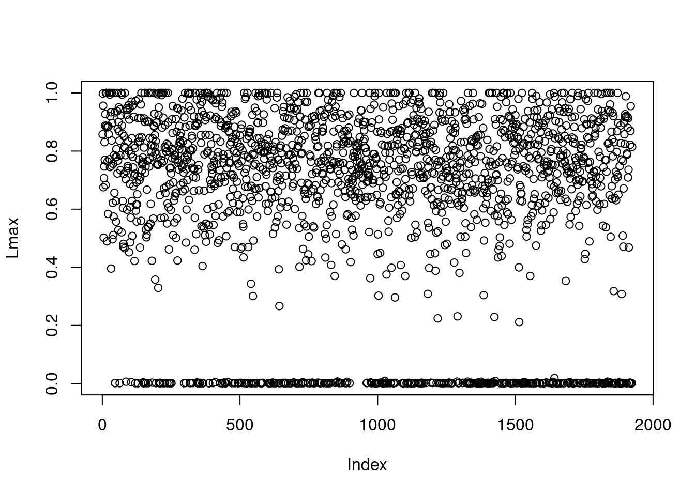
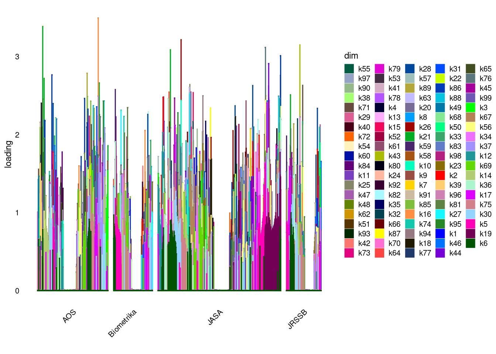

Last updated: 2023-09-23
Checks: 7 0
Knit directory: gsmash/
This reproducible R Markdown analysis was created with workflowr (version 1.6.2). The Checks tab describes the reproducibility checks that were applied when the results were created. The Past versions tab lists the development history.
Great! Since the R Markdown file has been committed to the Git repository, you know the exact version of the code that produced these results.
Great job! The global environment was empty. Objects defined in the global environment can affect the analysis in your R Markdown file in unknown ways. For reproduciblity it’s best to always run the code in an empty environment.
The command set.seed(20220606) was run prior to running
the code in the R Markdown file. Setting a seed ensures that any results
that rely on randomness, e.g. subsampling or permutations, are
reproducible.
Great job! Recording the operating system, R version, and package versions is critical for reproducibility.
Nice! There were no cached chunks for this analysis, so you can be confident that you successfully produced the results during this run.
Great job! Using relative paths to the files within your workflowr project makes it easier to run your code on other machines.
Great! You are using Git for version control. Tracking code development and connecting the code version to the results is critical for reproducibility.
The results in this page were generated with repository version 9333155. See the Past versions tab to see a history of the changes made to the R Markdown and HTML files.
Note that you need to be careful to ensure that all relevant files for
the analysis have been committed to Git prior to generating the results
(you can use wflow_publish or
wflow_git_commit). workflowr only checks the R Markdown
file, but you know if there are other scripts or data files that it
depends on. Below is the status of the Git repository when the results
were generated:
Ignored files:
Ignored: .Rhistory
Ignored: .Rproj.user/
Untracked files:
Untracked: analysis/GO_ORA_montoro.Rmd
Untracked: analysis/GO_ORA_pbmc_purified.Rmd
Untracked: analysis/fit_ebpmf_sla_2000.Rmd
Untracked: chipexo_rep1_reverse.rds
Untracked: data/Citation.RData
Untracked: data/SLA/
Untracked: data/abstract.txt
Untracked: data/abstract.vocab.txt
Untracked: data/ap.txt
Untracked: data/ap.vocab.txt
Untracked: data/sla_2000.rds
Untracked: data/sla_full.rds
Untracked: data/text.R
Untracked: data/tpm3.rds
Untracked: output/driving_gene_pbmc.rds
Untracked: output/pbmc_gsea.rds
Untracked: output/plots/
Untracked: output/tpm3_fit_fasttopics.rds
Untracked: output/tpm3_fit_stm.rds
Untracked: output/tpm3_fit_stm_slow.rds
Untracked: sla.rds
Unstaged changes:
Modified: analysis/PMF_splitting.Rmd
Modified: analysis/fit_ebpmf_sla.Rmd
Modified: analysis/index.Rmd
Modified: code/poisson_STM/structure_plot.R
Modified: code/poisson_mean/pois_log_normal_mle.R
Note that any generated files, e.g. HTML, png, CSS, etc., are not included in this status report because it is ok for generated content to have uncommitted changes.
These are the previous versions of the repository in which changes were
made to the R Markdown (analysis/sla_flash_init.Rmd) and
HTML (docs/sla_flash_init.html) files. If you’ve configured
a remote Git repository (see ?wflow_git_remote), click on
the hyperlinks in the table below to view the files as they were in that
past version.
| File | Version | Author | Date | Message |
|---|---|---|---|---|
| Rmd | 9333155 | DongyueXie | 2023-09-23 | wflow_publish("analysis/sla_flash_init.Rmd") |
The default initialization of EBPMF of mu (the ``latent’’ data) and \(\sigma^2\) is using VGA with mean 0 (after init of intercepts). However this initialization possibly leads to under-fitting, as demonstrated here.
In this analysis, we use another init strategy - we run flash (and let flash estiamte \(\sigma^2\)) on the mu (from VGA).
library(ebpmf)
library(fastTopics)
library(ggplot2)
sla_full <- readRDS("data/sla_full.rds")
dim(sla_full$data)[1] 3207 10104sum(sla_full$data==0)/prod(dim(sla_full$data))[1] 0.9948157doc_to_use = order(rowSums(sla_full$data),decreasing = T)[1:round(nrow(sla_full$data)*0.6)]
mat = sla_full$data[doc_to_use,]
samples = sla_full$samples
samples = lapply(samples, function(z){z[doc_to_use]})
word_to_use = which(colSums(mat>0)>=5)
mat = mat[,word_to_use]
set.seed(1)
# fit_ebpmf_K1 = ebpmf_log(mat,
# flash_control=list(backfit_extrapolate=T,backfit_warmstart=T,
# ebnm.fn = c(ebnm::ebnm_point_exponential, ebnm::ebnm_point_exponential),
# loadings_sign = 1,factors_sign=1,Kmax=1),
# init_control = list(n_cores=5,flash_est_sigma2=F,log_init_for_non0y=T),
# general_control = list(maxiter=100,save_init_val=T,save_latent_M=T),
# sigma2_control = list(return_sigma2_trace=T))
#plot(fit_ebpmf_K1$fit_flash$F_pm[,2])
#resid = flashier:::residuals.flash(fit_ebpmf_K1$fit_flash)
# saveRDS(fit_ebpmf_K1,file='/project2/mstephens/dongyue/poisson_mf/sla/sla_Kmax1_vgainit.rds')
fit_ebpmf_K1 = readRDS('/project2/mstephens/dongyue/poisson_mf/sla/sla_Kmax1_vgainit.rds')
fit_ebpmf_K1$elbo[1] -520720.6# fit_ebpmf_Kmax100 = ebpmf_log(mat,
# flash_control=list(backfit_extrapolate=T,backfit_warmstart=T,
# ebnm.fn = c(ebnm::ebnm_point_exponential, ebnm::ebnm_point_exponential),
# loadings_sign = 1,factors_sign=1,Kmax=100),
# init_control = list(n_cores=5,flash_est_sigma2=T,log_init_for_non0y=T),
# general_control = list(maxiter=100,save_init_val=T,save_latent_M=T),
# sigma2_control = list(return_sigma2_trace=T))
# saveRDS(fit_ebpmf_Kmax100,file='/project2/mstephens/dongyue/poisson_mf/sla/sla_Kmax100_flashinit.rds')
fit_ebpmf_Kmax100 = readRDS('/project2/mstephens/dongyue/poisson_mf/sla/sla_Kmax100_flashinit.rds')
fit_ebpmf_Kmax100$elbo[1] -529834.3# remove the first two columns (row and col intercepts)
L= fit_ebpmf_Kmax100$fit_flash$L_pm[,-c(1,2)]
F_pm = fit_ebpmf_Kmax100$fit_flash$F_pm[,-c(1,2)]
rownames(L)<-1:nrow(L)
Lnorm = t(t(L)/apply(L,2,max))
Fnorm = t(t(F_pm)*apply(L,2,max))
khat = apply(Lnorm,1,which.max)
Lmax = apply(Lnorm,1,max)
plot(Lmax)
khat[Lmax<0.1] = 0
keyw.nn =list()
for(k in 1:ncol(Fnorm)){
key = Fnorm[,k]>log(2)
keyw.nn[[k]] = (colnames(mat)[key])[order(Fnorm[key,k],decreasing = T)]
}
print(keyw.nn)[[1]]
[1] "treatment" "depress" "adher" "placebo" "complianc"
[6] "noncompli" "causal" "estimand" "elder" "drug"
[11] "meet" "assign" "strata" "receiv" "guidelin"
[16] "arm" "protocol" "stratif" "children" "doserespons"
[21] "intervent" "efron" "plausibl" "outcom" "trial"
[26] "particip" "patient" "encourag" "dose" "sever"
[31] "subject" "princip" "imperfect" "fisher" "rubin"
[36] "treat" "random" "debat" "physician" "acknowledg"
[41] "primari" "care" "activ" "clinic" "prescrib"
[46] "effect" "educ" "assumpt" "logic" "instrument"
[51] "contrast" "doubleblind" "latent" "blind" "collabor"
[56] "import" "benefit" "opposit" "analys" "improv"
[61] "emphas" "childhood" "damag"
[[2]]
[1] "virus" "immunodefici" "hiv" "viral" "human"
[6] "resist" "pressur" "therapi" "mutat" "drug"
[11] "evolutionari" "transmiss" "pathway" "syndrom" "kinet"
[16] "infect" "respiratori" "immun" "riemannian"
[[3]]
[1] "fdr" "fals" "discoveri" "control" "stepdown"
[6] "stepup" "reject" "kfwer" "hochberg" "pvalu"
[11] "fwer" "fdp" "benjamini" "familywis" "hypothes"
[16] "singlestep" "sime" "soc" "roy" "bonferroni"
[21] "holm" "conserv" "ser" "divid" "intersect"
[26] "multipl" "procedur" "test" "null" "toler"
[31] "configur" "rate" "abil" "alpha" "power"
[36] "stringent" "proport" "stat" "gamma" "implicit"
[41] "simultan" "attent" "fix" "total" "number"
[46] "individu" "error" "ann" "depend" "appl"
[51] "detect" "defin" "nondecreas" "deriv" "der"
[56] "proc"
[[4]]
[1] "pacif" "forecast" "northwest" "probabilist" "energi"
[6] "calibr" "north" "ensembl" "weather" "geostatist"
[11] "american" "matern" "speed" "sharp" "wind"
[16] "predict" "resourc" "regim" "proper" "meteorolog"
[21] "hour" "score" "rule" "event" "crossvalid"
[26] "centr" "atmospher" "futur" "merg" "parsimoni"
[31] "climatolog" "safeti" "agricultur"
[[5]]
[1] "hazard" "surviv" "failur" "censor" "event"
[6] "recurr" "cure" "cox" "frailti" "rightcensor"
[11] "lengthbias" "cancer" "cohort" "transplant" "incid"
[16] "cumul" "breast" "proport" "baselin" "prostat"
[21] "bivari" "termin" "time" "life" "risk"
[26] "lifetim" "followup" "timedepend" "semiparametr" "compet"
[31] "death" "preval" "acceler" "casecohort" "patient"
[36] "timevari" "logrank" "diseas" "survivor" "progress"
[41] "occurr" "odd" "associ" "covari" "kaplanmei"
[46] "onset" "age" "copula" "medic" "subject"
[51] "equat" "clinic" "timetoev" "registri" "joint"
[56] "longterm" "trial" "dementia" "epidemiolog" "regress"
[61] "nonparametr" "studi" "depend" "estim" "data"
[66] "analysi"
[[6]]
[1] "markov" "chain" "mont" "carlo"
[5] "mcmc" "hidden" "revers" "sampler"
[9] "posterior" "jump" "updat" "algorithm"
[13] "bayesian" "parallel" "gibb" "transit"
[17] "hierarch" "state" "prior" "ergod"
[21] "mixtur" "walk" "augment" "space"
[25] "metropoli" "reversiblejump" "infer" "prohibit"
[29] "transdimension" "liu"
[[7]]
[1] "climat" "greenhous" "temperatur" "climatolog" "mitig"
[6] "atmospher" "northern" "earth" "proxi" "chang"
[11] "ozon" "ecolog" "futur" "trend" "opposit"
[16] "weather" "reconstruct" "global" "environment" "pollut"
[21] "longterm" "expert" "air" "tempor" "uncertainti"
[26] "quantifi" "centuri"
[[8]]
[1] "elect" "vote" "poll" "presidenti" "polit"
[6] "station" "quick" "invalid" "candid" "forecast"
[11] "evid" "york" "counti" "incom" "scientist"
[16] "percentag" "nonrespond" "nonignor" "nonrespons"
[[9]]
[1] "polici" "statistician" "maker" "promot" "disciplin"
[6] "decis" "today" "scienc" "technolog" "student"
[11] "organ" "live" "communic" "american" "polit"
[16] "children" "action" "govern" "effort" "intern"
[21] "bring" "role" "countri" "engin" "program"
[26] "social" "human" "foundat" "face" "nation"
[31] "confidenti" "way" "mathemat" "stronger" "industri"
[36] "advanc" "chang" "scientif" "encourag" "inform"
[41] "understand" "evolv" "broader" "place" "ingredi"
[46] "scientist" "play" "elementari" "closer" "protect"
[51] "access" "individu" "devic" "pressur" "option"
[56] "secondari" "spread" "public" "imposs" "knowledg"
[61] "futur" "forc" "excel" "modern" "statist"
[[10]]
[1] "loci" "allel" "locus" "map"
[5] "phenotyp" "pedigre" "retrospect" "trait"
[9] "linkag" "quantit" "geneenviron" "genet"
[13] "marker" "populationbas" "migrat" "household"
[17] "casecontrol" "domin" "chromosom" "popul"
[21] "genom" "gene" "polymorph"
[[11]]
[1] "motif" "bind" "transcript" "nucleotid" "width"
[6] "protein" "sequenc" "regul" "align" "regulatori"
[11] "delet" "pattern" "conserv" "short" "quick"
[16] "priori" "similar" "substant" "allevi" "site"
[21] "live" "switch" "dictionari" "core" "adjac"
[26] "dna" "yeast" "call" "discoveri" "twostag"
[31] "wish" "gene"
[[12]]
[1] "gene" "microarray" "express" "biolog" "array"
[6] "differenti" "cancer" "chromosom" "cdna" "hybrid"
[11] "evolutionari" "probe" "organ" "discoveri" "thousand"
[16] "diseas" "pathway" "breast" "shrinkag" "infect"
[21] "genom" "profil" "cell" "fals" "molecular"
[26] "technolog" "tissu" "dna" "experi" "multipl"
[31] "regul" "detect" "genet" "identifi" "challeng"
[36] "simultan" "throughput" "yeast" "analysi" "data"
[[13]]
[1] "toxic" "dosefind" "escal" "dose"
[5] "ethic" "reassess" "phase" "prespecifi"
[9] "coher" "trial" "clinic" "target"
[13] "patient" "elicit" "assign" "competit"
[17] "closest" "aforement" "human" "design"
[21] "enhanc" "ask" "parallel" "qualit"
[25] "lose" "probabl" "durat" "percentag"
[29] "satisfactorili" "drug" "guidelin" "grade"
[33] "soft" "continu" "physician" "variant"
[37] "virtual" "continuum"
[[14]]
[1] "lasso" "oracl" "penalti" "sparsiti"
[5] "spars" "penal" "nonzero" "dantzig"
[9] "selector" "select" "norm" "nonasymptot"
[13] "fan" "scad" "coeffici" "regular"
[17] "tune" "recoveri" "entri" "highdimension"
[21] "absolut" "matrix" "shrinkag" "convex"
[25] "adapt" "path" "larger" "threshold"
[29] "variabl" "graph" "clip" "element"
[33] "nois" "vector" "logarithm" "squar"
[37] "solv" "lnorm" "grow" "nonconvex"
[41] "true" "frobenius" "deviat" "logp"
[45] "pattern" "regress" "dimens" "bound"
[49] "properti" "size" "achiev" "number"
[53] "linear" "corrupt" "perform" "lregular"
[[15]]
[1] "morbid" "outbreak" "air" "pollut"
[5] "cardiovascular" "timedepend" "agenc" "public"
[9] "instrument" "person" "period" "matter"
[13] "environment" "deliveri" "mortal" "epidemiolog"
[17] "hope" "servic" "health"
[[16]]
[1] "besov" "wavelet" "ball" "phi" "decay"
[6] "threshold" "white" "nearoptim" "waveletbas" "rang"
[11] "wide" "nois" "dens" "convolut" "signal"
[16] "adapt" "noisi" "shape" "view" "minimax"
[21] "deconvolut"
[[17]]
[1] "null" "test" "hypothesi" "hypothes" "versus" "altern"
[7] "power" "ratio" "reject" "signific" "chisquar" "discoveri"
[13] "fals" "statist" "equal" "pvalu" "distribut" "expect"
[19] "asymptot" "nonnul" "true" "independ" "control" "procedur"
[[18]]
[1] "memori" "differenc" "longmemori" "taper"
[5] "periodogram" "whittl" "long" "slowli"
[9] "fraction" "nonstationari" "distinct" "move"
[13] "angl" "lambda" "frequenc" "seri"
[17] "element" "paramet"
[[19]]
[1] "onlin" "materi" "supplementari" "supplement"
[5] "proof" "detail" "technic" "articl"
[[20]]
[1] "highfrequ" "volatil" "asset" "lowfrequ" "financi" "price"
[7] "vast" "market" "exchang" "avail" "longrun" "nois"
[13] "wavelet" "noisi" "realiz" "pool" "period" "daili"
[19] "stock"
[[21]]
[1] "van" "der" "meng" "liu" "minor"
[6] "survivor" "biometrika" "bernoulli" "ergod" "augment"
[11] "ann"
[[22]]
[1] "garch" "volatil" "rescal" "innov"
[5] "fourth" "stationari" "heteroscedast" "moment"
[9] "autoregress" "reparameter" "financi" "move"
[13] "iid" "arma" "seri" "ergod"
[17] "residu" "root" "capabl" "process"
[21] "return" "satisfi" "sequenc" "local"
[25] "paper" "asymmetr"
[[23]]
[1] "propens" "score" "treatment" "confound" "rubin" "school"
[7] "prognost" "assign" "adjust" "unmeasur" "nonrandom" "doubli"
[13] "summar" "balanc" "outcom" "stratif" "return" "causal"
[19] "pretreat" "american" "miss" "potenti" "match" "averag"
[25] "correct" "collaps" "covari" "weight" "bias" "research"
[31] "reduc" "ubiquit" "observ"
[[24]]
[1] "earthquak" "explos" "discrimin" "extract" "occurr"
[6] "rescal" "spectra" "amplitud" "event" "wavelet"
[11] "seri" "thin" "featur" "diverg" "insid"
[16] "bear" "process" "background" "anisotrop" "depart"
[21] "california" "time" "bartlett" "parent"
[[25]]
[1] "bureau" "census" "race" "feder" "labor"
[6] "unemploy" "smallarea" "confidenti" "benchmark" "bridg"
[11] "imput" "add" "protect" "respond" "multiscal"
[16] "suppress" "employ" "implic" "aggreg" "collect"
[21] "survey" "nation" "statespac" "extrapol" "gender"
[26] "proxi" "nonrespons"
[[26]]
[1] "magnet" "reson" "fmri" "imag" "tissu" "voxel" "brain" "field"
[9] "activ" "volum" "signal" "visual" "motion"
[[27]]
[1] "nonrespons" "imput" "nonignor" "nonrespond" "survey"
[6] "panel" "preliminari" "benchmark" "miss" "incom"
[11] "agenc" "respond" "respons" "item" "plan"
[16] "agricultur" "calibr" "domain" "mechan" "counti"
[21] "valu" "compens" "handl" "household" "interview"
[26] "varianc" "race" "nation"
[[28]]
[1] "vaccin" "infecti" "infect" "suscept" "estimand" "transmiss"
[7] "household" "outbreak" "attack" "causal" "posttreat" "secondari"
[13] "protect" "individu" "communiti" "diseas" "syndrom" "efficaci"
[19] "interfer" "prevent" "defici" "outcom" "immun" "unit"
[25] "assign" "contact" "coverag" "reduc" "narrow" "placebo"
[31] "relat" "trial"
[[29]]
[1] "mother" "infant" "closur" "respiratori"
[5] "birth" "insensit" "advers" "assay"
[9] "convolut" "abrupt" "air" "code"
[13] "unmeasur" "citi" "hospit" "sure"
[17] "allevi" "tempor" "invalid" "happen"
[21] "notabl" "complementari" "cell" "action"
[25] "mixedeffect" "qualiti" "bioassay"
[[30]]
[1] "prior" "dirichlet" "posterior" "bayesian" "bay"
[6] "gibb" "mixtur" "frequentist" "hierarch" "intrins"
[11] "mode" "densiti" "conjug" "factor" "induc"
[16] "specif" "distribut" "process" "paradox" "probabl"
[21] "jeffrey" "polya" "model"
[[31]]
[1] "autocovari" "stream" "autocorrel" "seri" "meansquar"
[6] "white" "day" "autoregress" "longmemori" "time"
[[32]]
[1] "spacetim" "site" "asymmetr" "meteorolog" "ozon"
[6] "thin" "spatial" "smoother" "california" "tempor"
[11] "wind" "season" "daili" "monitor" "background"
[16] "intens" "year" "hour" "symmetr" "trend"
[21] "separ" "elabor" "emphas" "environment" "fit"
[26] "threat"
[[33]]
[1] "manifold" "riemannian" "geodes" "metric"
[5] "gender" "planar" "intrins" "tensor"
[9] "euclidean" "sphere" "embed" "orient"
[13] "space" "map" "perturb" "threedimension"
[17] "vision" "tangent" "shape" "intuit"
[21] "matric" "landmark" "diagnost" "cubic"
[[34]]
[1] "treatment" "trial" "clinic" "interim"
[5] "responseadapt" "patient" "endpoint" "alloc"
[9] "arm" "stage" "logrank" "efficaci"
[13] "design" "sequenti" "decis" "twostag"
[17] "rule" "prevent" "outcom" "assign"
[21] "criteria" "earli" "random" "event"
[25] "followup" "coin" "cancer" "medic"
[29] "control" "termin" "experienc" "firststag"
[33] "placebo" "test" "effect"
[[35]]
[1] "releas" "agenc" "registri" "selfconsist" "alter"
[6] "vehicl" "public" "databas" "census" "diagnosi"
[11] "report" "output" "protect" "threat" "delay"
[16] "data" "geograph"
[[36]]
[1] "spatial" "spatiotempor" "lattic" "krige"
[5] "scan" "surfac" "brain" "locat"
[9] "nonstationari" "map" "intens" "geostatist"
[13] "neighbor" "process" "stationari" "field"
[17] "block" "precipit" "voxel" "region"
[21] "inhomogen" "pattern" "hierarch" "correl"
[25] "geograph" "burden" "dataset" "structur"
[29] "point" "neuroimag" "weather" "comput"
[33] "satellit" "data"
[[37]]
[1] "minimax" "sobolev" "densiti" "sharp" "rate" "attain"
[7] "element" "inequ" "adapt" "optim" "risk" "loss"
[13] "unknown" "converg" "rateoptim" "gaussian" "sens" "prove"
[19] "smooth" "uniform" "vector" "lower" "bound" "class"
[25] "set" "estim" "function" "problem"
[[38]]
[1] "elicit" "question" "histor" "art" "uncertain"
[6] "psycholog" "answer" "hope" "prone" "inform"
[11] "respond" "judg" "hyperparamet" "believ" "colleagu"
[16] "expert" "closer" "person" "statistician" "particip"
[21] "pool" "lowdimension" "heurist" "thought" "bring"
[26] "kind" "indirect" "reach" "task" "encourag"
[31] "lack" "peopl" "logarithm" "modern" "review"
[36] "simpli" "conjug"
[[39]]
[1] "eigenvector" "eigenvalu" "tensor" "axe" "matric"
[6] "matrix" "invari" "scatter" "subspac" "diffus"
[11] "symmetr" "orthogon" "princip" "popul" "track"
[16] "covari" "spectral"
[[40]]
[1] "alcohol" "disord" "trait" "mental"
[5] "haplotyp" "dichotom" "ordin" "environment"
[9] "genet" "associ" "phenotyp" "believ"
[13] "quantit" "transmiss" "geneenviron" "ill"
[17] "routin" "zhang" "today" "topic"
[21] "wellestablish" "aggreg" "multist"
[[41]]
[1] "men" "sex" "women" "twosid"
[5] "parent" "opposit" "percentil" "race"
[9] "educ" "prefer" "record" "member"
[13] "household" "children" "onesid" "nation"
[17] "elder" "age" "complementari" "potenti"
[21] "conjunct" "stronger" "earlier" "crosssect"
[25] "detail" "characterist" "simpler" "affect"
[29] "wave" "rough" "stabil" "retrospect"
[[42]]
[1] "simex" "simulationextrapol" "errorpron"
[4] "longer" "withinclust" "frailti"
[7] "wang" "undersmooth"
[[43]]
[1] "undersmooth" "reml" "star" "selector"
[[44]]
[1] "bandwidth" "kernel" "selector" "crossvalid" "nonmonoton"
[6] "polynomi" "plugin" "local" "densiti" "smooth"
[11] "datadriven" "choos" "select" "hall" "chosen"
[16] "nearbi" "choic" "estim"
[[45]]
[1] "spectral" "periodogram" "densiti" "frequenc" "domain"
[6] "stationari" "whittl" "spectra" "fourier" "seri"
[11] "tail" "time" "calcul" "norm" "ldistanc"
[[46]]
[1] "filter" "particl" "statespac" "sequenti" "recurs"
[6] "state" "outofsampl" "resampl" "algorithm" "frequenc"
[11] "dynam" "iter" "mont" "carlo" "signaltonois"
[[47]]
[1] "earn" "encourag" "educ" "person" "train"
[6] "interview" "document" "instrument" "employ" "census"
[11] "incom" "accept" "categori" "manipul" "slight"
[16] "report" "feder" "prototyp" "file" "insensit"
[21] "subsequ" "total" "peopl" "resembl" "compens"
[[48]]
[1] "disabl" "live" "emphas" "debat" "foundat"
[6] "healthi" "consecut" "month" "progress" "life"
[11] "translat" "stationar" "feder" "daili" "longstand"
[16] "psycholog" "labor" "capac" "tabl" "preval"
[21] "framingham" "costeffect" "employ" "manipul" "report"
[26] "status" "health"
[[49]]
[1] "slice" "sir" "save" "invers" "central" "contour"
[7] "subspac" "exhaust" "reduct" "dimens" "nconsist" "goal"
[13] "direct" "averag" "regress" "method"
[[50]]
[1] "eigenfunct" "princip" "trajectori" "compon" "curv"
[6] "noisi" "compos" "elucid" "spars" "function"
[11] "eigenvalu" "span" "expans" "smooth" "random"
[16] "analysi" "deriv" "data"
[[51]]
[1] "custom" "retail" "compani" "deliveri"
[5] "arriv" "servic" "obvious" "center"
[9] "consum" "forecast" "bank" "irrelev"
[13] "capac" "week" "costeffect" "commerci"
[17] "contact" "tradit" "durat" "total"
[21] "tie" "lognorm" "satisfactorili" "pay"
[25] "style" "suppress" "histori" "today"
[29] "drop" "compon" "sex"
[[52]]
[1] "electr" "wind" "forecast" "load"
[5] "speed" "renew" "hour" "market"
[9] "daili" "energi" "power" "shortterm"
[13] "price" "distort" "heteroscedast" "bivari"
[17] "nuclear" "diagon" "serial" "width"
[21] "superpopul" "consumpt"
[[53]]
[1] "ovarian" "colorect" "geneenviron" "environment"
[5] "diseas" "exposur" "fine" "firststag"
[9] "ascertain" "smallsampl" "onset" "cancer"
[13] "lung" "genet" "casecontrol" "registri"
[17] "logist" "gather" "prostat" "complementari"
[21] "subject" "tumour" "proc" "studi"
[[54]]
[1] "racial" "stop" "depart" "race" "traffic"
[6] "york" "citi" "item" "enforc" "benchmark"
[11] "hour" "drive" "suspect" "person" "descent"
[16] "minor" "survey" "know" "california" "research"
[21] "polit"
[[55]]
[1] "immun" "overlap" "northwest" "vectorvalu" "contact"
[6] "stratum" "transmiss" "environment" "epidem" "appropri"
[11] "birth" "death" "problemat" "debat" "ecolog"
[16] "led" "delet" "role" "engin" "driven"
[21] "abund" "possibl" "proceed" "financ" "drawn"
[26] "transport"
[[56]]
[1] "classif" "classifi" "machin" "discrimin"
[5] "multicategori" "soft" "rule" "boost"
[9] "misclassif" "train" "support" "learn"
[13] "binari" "poor" "deliv" "loss"
[17] "diverg" "vector" "accumul" "featur"
[21] "centroid" "perform" "supervis"
[[57]]
[1] "biomark" "ftest" "birth" "devic" "exemplifi"
[6] "healthi" "anova" "cohort" "nutrit" "deliveri"
[11] "pathway" "exposur" "longterm" "initi" "expens"
[16] "prevent" "trajectori" "earli" "epidemiolog" "molecular"
[21] "status"
[[58]]
[1] "equivari" "scatter" "depth" "affin" "hyperplan"
[6] "locationscal" "breakdown" "tukey" "concept" "median"
[11] "project" "rootn" "ellipt" "plane" "bodi"
[16] "matrix" "multivari" "introduc" "translat"
[[59]]
[1] "surveil" "cancer" "counti" "incid" "institut"
[6] "epidemiolog" "mortal" "lung" "detect" "program"
[11] "unusu" "unit" "nation" "delay" "geograph"
[16] "epidem" "chang" "interview" "diseas" "prostat"
[21] "preliminari" "scan" "rate" "genuin"
[[60]]
[1] "suppli" "water" "beta" "kinet"
[5] "regulatori" "contamin" "tild" "tissu"
[9] "parallel" "regul" "flow" "lowerdimension"
[13] "column" "sigma" "epsilon" "perfect"
[17] "lregular" "speak" "superposit" "program"
[21] "tomographi" "semin" "uncertainti" "quantit"
[25] "suspect" "ideal" "emiss" "residu"
[29] "logarithm" "nonasymptot"
[[61]]
[1] "trade" "forecast" "datagener" "cubic"
[5] "day" "econom" "load" "stock"
[9] "autoregress" "feder" "lowerdimension" "daili"
[[62]]
[1] "usag" "content" "track" "document" "traffic" "capac"
[7] "wish" "copula" "mainten" "northern" "histor" "languag"
[[63]]
[1] "snp" "polymorph" "haplotyp" "genotyp" "nucleotid" "million"
[7] "genomewid" "parent" "gather" "genom" "scope" "genet"
[13] "singl" "diseas" "dna" "variant" "pedigre" "variat"
[19] "uncertain" "soft"
[[64]]
[1] "wishart" "cone" "graph" "conjug" "enrich"
[6] "decompos" "famili" "sigma" "zero" "graphic"
[11] "matric" "homogen" "shape" "tangent" "scalabl"
[16] "ann" "matrix" "invers" "definit" "correspond"
[21] "gaussian" "edg" "eigenvalu" "covari" "paramet"
[[65]]
[1] "nuisanc" "psi" "profil"
[4] "mestim" "theta" "lambda"
[7] "frequentist" "paramet" "elimin"
[10] "semiparametr" "likelihood" "infinitedimension"
[13] "ancillari"
[[66]]
[1] "registr" "curv" "amplitud" "landmark" "align" "crosssect"
[7] "phase" "radius" "curvatur" "shape" "metric" "geometri"
[13] "convex" "demograph" "variat" "tempor" "transform" "exhibit"
[19] "twostep" "closur"
[[67]]
[1] "health" "care" "servic" "hospit" "qualiti"
[6] "patient" "exposur" "physician" "status" "monitor"
[11] "visit" "survey" "age" "multilevel" "outcom"
[16] "nutrit" "year" "organ" "largest" "pattern"
[21] "prevent" "diseas" "report" "mortal" "nation"
[26] "state" "longitudin" "polici" "account" "popul"
[31] "administr" "analys"
[[68]]
[1] "mle" "mles" "siev" "brownian" "gap"
[6] "motion" "naiv" "status" "proof" "uniqu"
[11] "drift" "maximum" "likelihood" "main" "current"
[16] "prove"
[[69]]
[1] "confid" "interv" "coverag" "bootstrap" "band" "region"
[7] "invert" "nomin" "construct" "onesid" "limit" "asymptot"
[[70]]
[1] "factori" "design" "aberr" "doubl"
[5] "twolevel" "minimum" "complementari" "resolut"
[9] "run" "project" "factor" "fraction"
[13] "quantit" "engin" "construct" "agricultur"
[[71]]
[1] "cook" "influenti" "curvatur" "delet" "resolv" "discrep"
[7] "influenc" "perturb" "distanc" "rigor" "fundament" "address"
[13] "issu" "aim" "degre" "crosssect" "subset" "sir"
[[72]]
[1] "undirect" "graph" "boolean" "kinet" "chemic"
[6] "edg" "intern" "uniqu" "encod" "blood"
[11] "disjoint" "unidentifi" "correspond" "acycl" "graphic"
[16] "markov" "independ" "mitig" "transcript" "bind"
[21] "characteris" "centr" "read"
[[73]]
[1] "carrol" "liu" "lin" "backfit"
[5] "singleindex" "rootn" "amer" "assoc"
[9] "ball" "withinclust" "prototyp" "withinsubject"
[13] "stochast"
[[74]]
[1] "varyingcoeffici" "conduct"
[[75]]
[1] "predictor" "respons" "predict" "reduct" "regress"
[6] "scalar" "dimens" "distort" "trajectori" "squar"
[11] "unbias" "linear" "flexibl" "function"
[[76]]
[1] "upper" "bound" "lower" "risk" "tail" "radius" "deriv"
[[77]]
[1] "rankbas" "cam" "rank" "symmetri" "contour" "irrespect"
[7] "ellipt" "sign" "onestep" "acceler" "rootn" "uniform"
[13] "effici" "asymptot"
[[78]]
[1] "transport" "ozon" "format" "precipit"
[5] "atmospher" "satellit" "maxima" "pressur"
[9] "protein" "temperatur" "ensembl" "cycl"
[13] "weather" "forecast" "splinebas" "piecewiselinear"
[17] "mainten" "current" "asymmetr" "synthes"
[21] "retrospect"
[[79]]
[1] "subfamili" "asymmetr" "pivot" "reparameter" "mise"
[6] "famili" "skew" "symmetr" "frequentist" "subclass"
[11] "urn" "pursu" "disjoint" "add" "withingroup"
[[80]]
[1] "pca" "twoway" "embed" "succeed" "princip"
[6] "logp" "spike" "reduct" "perturb" "tree"
[11] "transit" "compon" "evolutionari" "eigenvalu" "lose"
[16] "sudden" "crossov" "geodes" "anim" "topolog"
[21] "diagon"
[[81]]
[1] "loglikelihood" "edgeworth" "quadrat" "ratio"
[5] "gaussian" "likelihood" "maximum"
[[82]]
[1] "kendal" "tau" "truncat" "copula" "shape"
[6] "angl" "sphere" "symmetr" "tomographi" "speak"
[11] "emb" "geodes"
[[83]]
[1] "evolut" "cycl" "mutat" "human" "dynam"
[6] "histor" "reconstruct" "period" "sequenc" "understand"
[11] "recognit" "time" "wind"
[[84]]
[1] "pseudo" "manifest" "collaps" "nconsist" "categori"
[6] "cross" "reweight" "hoc" "ail" "degener"
[11] "jackknif" "nonrespond"
[[85]]
[1] "slower" "converg" "rate"
[[86]]
[1] "entropi" "metric" "bracket" "theorem"
[[87]]
[1] "trim" "depth" "discard" "radius" "ellipt" "breakdown"
[7] "subsampl" "robust" "contamin" "outlier" "remov" "serv"
[13] "induc" "feasibl"
[[88]]
[1] "aic" "bic" "akaik" "criterion" "switch" "ail"
[7] "select" "criteria"
[[89]]
[1] "rotat" "axe" "motion" "sphere" "translat"
[6] "isotrop" "mise" "omega" "transform" "splinebas"
[11] "spheric" "map" "domain" "autocorrel" "anatom"
[[90]]
[1] "centuri" "neyman" "speak" "scientist" "tstatist"
[6] "million" "opportun" "statistician" "mortal" "earli"
[11] "deliv" "compris" "practition" "bring" "environ"
[16] "scientif" "thousand" "presidenti" "address" "histor"
[21] "fisher" "polit" "manipul" "merg" "age"
[26] "ago" "tdistribut"
[[91]]
[1] "peopl" "name" "widespread" "network" "interfer"
[6] "social" "environ" "sourc" "welldefin" "read"
[11] "organ" "engin" "psycholog"
[[92]]
[1] "compound" "nondiscoveri" "multipletest" "doserespons"
[5] "oracl" "voxel" "chemic" "datadriven"
[9] "realdata" "fals" "ineffici" "hypothes"
[13] "fdr" "subject" "minim" "constraint"
[17] "convent" "simultan" "tau" "optim"
[21] "landmark" "procedur" "responseadapt" "ethic"
[[93]]
[1] "jin" "tukey" "subtl" "distancebas" "succeed"
[6] "nonzero" "boundari" "fraction" "amplitud" "higher"
[11] "critic" "detect" "neighbour" "mention" "complianc"
[16] "nearest" "leav" "phenomena" "supremum" "lower"
[21] "qualit"
[[94]]
[1] "homoscedast" "heteroscedast" "multiscal" "transform"
[5] "regress"
[[95]]
[1] "bar" "vertic" "cap" "lambda" "theta" "beta" "psi" "hasti"
[[96]]
[1] "deconvolut" "blur" "fourier" "errorsinvari" "radiat"
[6] "polynomi" "argument" "viewpoint" "place" "discret"
[11] "recov" "kernel" "densiti" "physic" "unrealist"
[16] "error" "problem" "function"
[[97]]
[1] "languag" "abil" "underpin" "recognit" "expert"
[6] "introduct" "happen" "diagnosi" "encod" "logic"
[11] "uncertainti" "proven" "make" "kind" "learn"
[16] "mathemat" "possibl" "rich" "theori" "laplac"
[21] "deal" "notion" "machin" "argument" "attempt"
[26] "purpos" "benefit"
[[98]]
[1] "unspecifi" "wilk" "postul" "submodel"
[5] "distributionfre" "interact" "follow" "hold"
[9] "margin" "semiparametr" "baselin" "leav"
[13] "prone"
[[99]]
[1] "theorem" "central" "limit" structure_plot_general = function(Lhat,Fhat,grouping,title=NULL,
loadings_order = 'embed',
print_plot=FALSE,
seed=12345,
n_samples = NULL,
gap=40,
std_L_method = 'sum_to_1',
show_legend=TRUE,
K = NULL
){
set.seed(seed)
#s <- apply(Lhat,2,max)
#Lhat <- t(t(Lhat) / s)
if(is.null(n_samples)&all(loadings_order == "embed")){
n_samples = 2000
}
if(std_L_method=='sum_to_1'){
Lhat = Lhat/rowSums(Lhat)
}
if(std_L_method=='row_max_1'){
Lhat = Lhat/c(apply(Lhat,1,max))
}
if(std_L_method=='col_max_1'){
Lhat = apply(Lhat,2,function(z){z/max(z)})
}
if(std_L_method=='col_norm_1'){
Lhat = apply(Lhat,2,function(z){z/norm(z,'2')})
}
if(!is.null(K)){
Lhat = Lhat[,1:K]
Fhat = Fhat[,1:K]
}
Fhat = matrix(1,nrow=3,ncol=ncol(Lhat))
if(is.null(colnames(Lhat))){
colnames(Lhat) <- paste0("k",1:ncol(Lhat))
}
fit_list <- list(L = Lhat,F = Fhat)
class(fit_list) <- c("multinom_topic_model_fit", "list")
p <- structure_plot(fit_list,grouping = grouping,
loadings_order = loadings_order,
n = n_samples,gap = gap,verbose=F) +
labs(y = "loading",color = "dim",fill = "dim") + ggtitle(title)
if(!show_legend){
p <- p + theme(legend.position="none")
}
if(print_plot){
print(p)
}
return(p)
}
structure_plot_general(Lnorm,Fnorm,grouping = samples$journal,std_L_method = 'col_max_1')Running tsne on 508 x 99 matrix.Running tsne on 280 x 99 matrix.Running tsne on 885 x 99 matrix.Running tsne on 251 x 99 matrix.
sessionInfo()R version 4.1.0 (2021-05-18)
Platform: x86_64-pc-linux-gnu (64-bit)
Running under: CentOS Linux 7 (Core)
Matrix products: default
BLAS: /software/R-4.1.0-no-openblas-el7-x86_64/lib64/R/lib/libRblas.so
LAPACK: /software/R-4.1.0-no-openblas-el7-x86_64/lib64/R/lib/libRlapack.so
locale:
[1] LC_CTYPE=en_US.UTF-8 LC_NUMERIC=C LC_TIME=C
[4] LC_COLLATE=C LC_MONETARY=C LC_MESSAGES=C
[7] LC_PAPER=C LC_NAME=C LC_ADDRESS=C
[10] LC_TELEPHONE=C LC_MEASUREMENT=C LC_IDENTIFICATION=C
attached base packages:
[1] stats graphics grDevices utils datasets methods base
other attached packages:
[1] ggplot2_3.4.1 fastTopics_0.6-158 ebpmf_2.3.3 workflowr_1.6.2
loaded via a namespace (and not attached):
[1] mcmc_0.9-7 bitops_1.0-7 matrixStats_0.59.0
[4] fs_1.5.0 progress_1.2.2 httr_1.4.5
[7] rprojroot_2.0.2 tools_4.1.0 bslib_0.4.2
[10] utf8_1.2.3 R6_2.5.1 irlba_2.3.5.1
[13] uwot_0.1.14 lazyeval_0.2.2 colorspace_2.1-0
[16] withr_2.5.0 wavethresh_4.7.2 prettyunits_1.1.1
[19] tidyselect_1.2.0 ebpm_0.0.1.3 compiler_4.1.0
[22] git2r_0.28.0 glmnet_4.1-2 cli_3.6.1
[25] quantreg_5.94 SparseM_1.81 plotly_4.10.1
[28] labeling_0.4.2 horseshoe_0.2.0 sass_0.4.0
[31] smashrgen_1.2.5 caTools_1.18.2 flashier_0.2.51
[34] scales_1.2.1 mvtnorm_1.1-2 SQUAREM_2021.1
[37] quadprog_1.5-8 pbapply_1.7-0 mixsqp_0.3-48
[40] stringr_1.5.0 digest_0.6.31 rmarkdown_2.9
[43] MCMCpack_1.6-3 deconvolveR_1.2-1 vebpm_0.4.9
[46] pkgconfig_2.0.3 htmltools_0.5.4 highr_0.9
[49] fastmap_1.1.0 invgamma_1.1 htmlwidgets_1.6.1
[52] rlang_1.1.1 rstudioapi_0.13 farver_2.1.1
[55] shape_1.4.6 jquerylib_0.1.4 generics_0.1.3
[58] jsonlite_1.8.4 dplyr_1.1.0 magrittr_2.0.3
[61] smashr_1.3-6 Matrix_1.5-3 Rcpp_1.0.10
[64] munsell_0.5.0 fansi_1.0.4 lifecycle_1.0.3
[67] RcppZiggurat_0.1.6 stringi_1.6.2 whisker_0.4
[70] yaml_2.3.7 MASS_7.3-54 Rtsne_0.16
[73] grid_4.1.0 parallel_4.1.0 promises_1.2.0.1
[76] ggrepel_0.9.3 crayon_1.5.2 lattice_0.20-44
[79] cowplot_1.1.1 splines_4.1.0 hms_1.1.2
[82] knitr_1.33 pillar_1.8.1 softImpute_1.4-1
[85] codetools_0.2-18 glue_1.6.2 evaluate_0.14
[88] trust_0.1-8 data.table_1.14.8 RcppParallel_5.1.7
[91] foreach_1.5.1 vctrs_0.6.2 nloptr_2.0.3
[94] httpuv_1.6.1 MatrixModels_0.5-1 gtable_0.3.1
[97] purrr_1.0.1 ebnm_1.0-54 tidyr_1.3.0
[100] ashr_2.2-54 cachem_1.0.5 xfun_0.24
[103] Rfast_2.0.7 coda_0.19-4 later_1.3.0
[106] mr.ash_0.1-87 survival_3.2-11 viridisLite_0.4.1
[109] truncnorm_1.0-8 tibble_3.2.1 iterators_1.0.13
[112] ellipsis_0.3.2